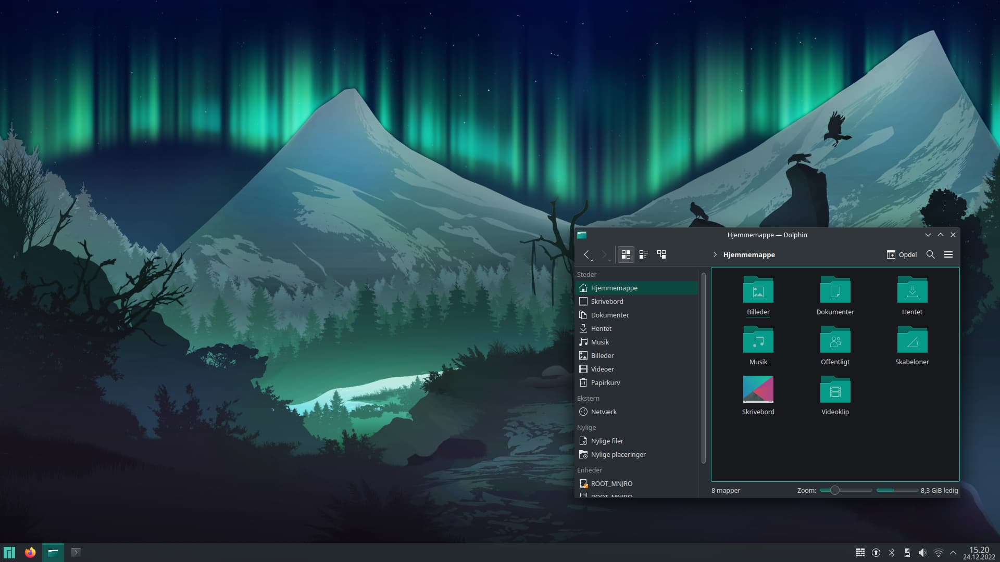

Welcome to this my first blog. Here we are going to see how we install the Manjero linux distro. This Linux distro is based on Arch linux
Before we start the instalation we should have following
U can use Rufus or Etcher or Power ISO
Manjaro took the next step and became a community driven company, to be better placed for financial security, building ties with businesses and other organizations, and to be recognized as a serious player in the Linux world. More about it in our forums: https://t.co/jcSWaXfVhD pic.twitter.com/dxTQiRuzlO
— Manjaro Linux (@ManjaroLinux) September 8, 2019